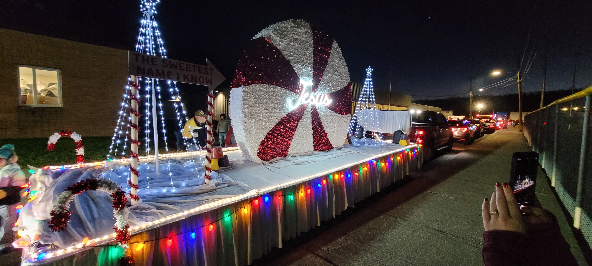
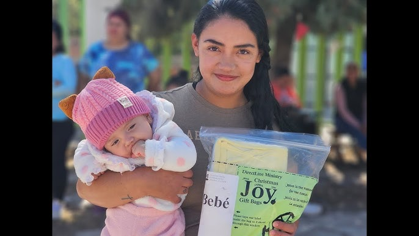
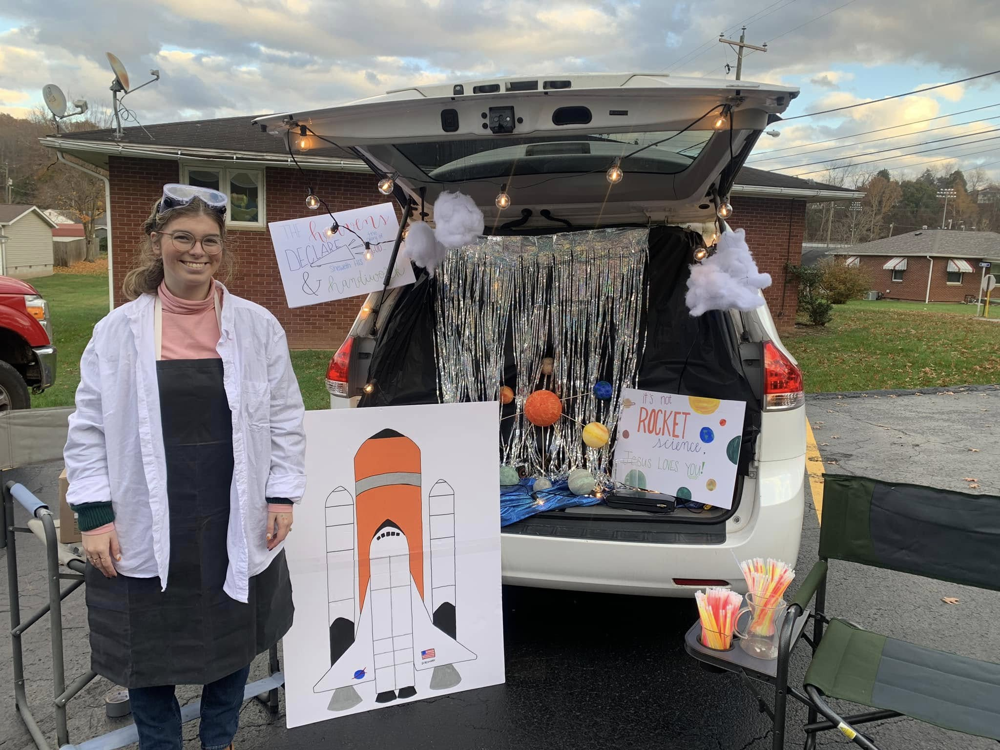

Men and Ladies Outreach
Men meet at 6pm on Thursdays and ladies at 11am on Tuesdays to make visits and spread the Gospel throughout our community.
Get InvolvedParades
One of our widest-reaching outreach activities is our Independence Day and Christmas parade floats. Volunteer opportunities are available in float design and construction as well as walking in the parade to hand out gospel tracts.
Volunteer
Nursing Home
On the second Sunday of each month, RTBC volunteers hold a worship service at Mountain View Care Center in Ripley to give residents the opportunity to participate in praise and worship as well as the chance to hear the Word of God.
Get InvolvedMissions Team
The Missions Team helps track our sponsored missionaries around the world as well as supporting them in the field and when they visit RTBC.
No Needs Currently
JOY Bags
Volunteers can help send basic necessities to less fortunate children all around the world while simultaneously spreading the Gospel. You can help by donating financially or by helping assemble JOY Bags.
Get InvolvedTrunk or Treat
Trunk or Treat gives us the opportunity to hand out thousands of Gospel tracts each year. Volunteer opportunities include decorating your car and handing out candy as well as donating bags of candy.
Join In